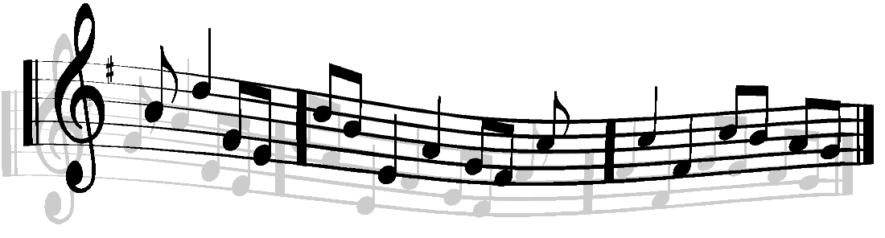
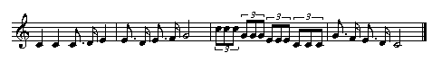
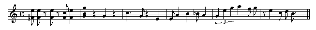
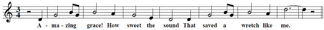

Composition of a musical piece is often a trial-and-error process, in which the musician writes down a series of notes on paper and tests them out on a musical instrument. One way to do this on a computer is to type the notes into a text file using a special notation and feed them to a program that understands this notation. This way, you can transcribe your favorite pieces of music or compose your own pieces, and easily exchange them among your friends on the web.
abc is one of the languages designed for this purpose. It was originally intended for notating folk and traditional tunes of Western Europe, but it provides a sufficient set of constructs for transcribing a reasonably complex piece of music, such as a Beethoven symphony. Since its invention in 1980's, abc has become one of the most popular notations for music, with around 50,000 abc files circulating around the web.
In this project, you will build an abc player for karaoke. Your abc player will play abc files while printing out associated lyrics in synchrony with the music. Specifically, each syllable of a song's lyric should be printed at the same time as it should be sung. You will use ANTLR to parse abc files, and the Java MIDI API to playback the music. You are required to handle only a subset of the abc language, which we will discuss in more detail below in the Specification section. This subset is sufficient to play a large number of interesting tunes that are available on the web, but you are welcome to implement the rest of the standard, as long as your overall design remains clean and simple.
The purpose of this project is to help you gain experience with:
This project will also offer an opportunity to continue working with the fundamentals of compilation, including:
Finally, the project will give you further practice in software engineering fundamentals, such as:
The Specification below is not meant to provide you with comprehensive information on abc notation. Instead, you may find the following links helpful as you work to understand the notation:
You are required to implement a subset of abc notation. The subset that you are required to implement is described in a separate document: The ABC Subset for 6.005. Also, we are giving you a grammar in an EBNF that corresponds to the subset: The ABC Subset Grammar for 6.005.
As in Problem Set 2, you must create your own AST.
Note: You are NOT allowed to use any code taken from an existing abc player as a part of your implementation in this project.
If you would like, you are welcome to go beyond this subset. However, you are only required to implement the ABC Subset for 6.005.
During this project, you will perform the following tasks. The Deliverables and Grading section specifies when each component is due.
Clone your team's Git repository using (all one line):
git clone ssh://[username]@athena.dialup.mit.edu/afs/athena.mit.edu/course/6/6.005/git/fa13/projects/abcplayer/[username1]-[username2]-[username3].git abcplayer
Before you start the project, you should learn about the Java MIDI Sequencer. It allows you to schedule a series of notes to be played at certain time intervals.
Look at the package sound under src, and study the class SequencePlayer and the interface LyricListener. For this project, you will not need to modify these, but you should become comfortable with implementing LyricListener and using SequencePlayer's constructor and its methods addNote, addLyricEvent and play.
SequencePlayer(int beatsPerMinute, int ticksPerBeat, LyricListener listener): The constructor for SequencePlayer takes three parameters:
addNote(int note, int startTick, int numTicks): This method schedules a note to be played at startTick for the duration of numTicks. Here, a "tick" is similar to a time step. At the beginning of a musical piece, the global tick is initialized to 0, and as the music progresses through the notes, the global tick is incremented by some number. The first parameter note is a MIDI note value that corresponds to the pitch of a note. The provided class Pitch contains a number of useful methods for working with pitches. In particular, the method toMidiNote returns the MIDI note value of the particular note, and transpose can be used to transpose the note some number of semitones up or down.
addLyricEvent(String text, int tick): This method schedules a lyric event to be triggered at tick, and sets text as the text associated with that lyric event.
play(): After all of the notes and lyrics have been scheduled, you can invoke play to tell the sequencer to begin playing the music.
To implement LyricListener you should override its processLyricEvent method, which is called whenever a lyric event is reached as the SequencePlayer plays music.
Run the main method in SequencePlayer, which shows an example of using a sequencer to play up and down a C major scale, and uses two lyric events to display "Up!" and "Down!". In this example, all of the notes and lyrics have been hard-coded. In your abc player, you will be walking over your data structures that represent a musical piece and automatically scheduling notes and lyrics at appropriate ticks. You will also need to implement LyricListener in a different way in order to display lyrics correctly.
We are also providing some example abc files that you can use to test your abc player. (These are included in the git repository under the folder sample_abc). They are:
You can find many more examples online, including here.
Note: If you don't understand musical notation, this Wikipedia page may be helpful.
Task 1: Transcribe each of the following small pieces of music into an abc file. Name your files as piece1.abc, piece2.abc and piece3.abc, respectively, and commit them under the directory sample_abc in your team's git repository.
You may find The ABC Subset for 6.005 useful here.
Piece 1: A simple, 4/4 meter piece with triplets. As a starter, the header and the first two bars are already provided. You should complete the rest of the piece by transcribing the last two bars.

X: 1 T:Piece No.1 M:4/4 L:1/4 Q:1/4=140 K:C C C C3/4 D/4 E | E3/4 D/4 E3/4 F/4 G2 |
Piece 2: A more complex piece, with chords, accidentals, and rests. Set its tempo to 200 and use a default note length of 1/4. The piece below is only an excerpt, and the last measure is not a full measure. Pad the piece with enough rests to complete the measure.

Piece 3: A piece with lyrics. Set its tempo to 100 and use a default note length of 1/8. You should make sure to align your lyrics with music correctly using the symbols described in the ABC subset. If you want, you may ignore the tie between the last two notes in the piece, as the ABC subset does not include ties.

Task 2: Write JUnit tests that play these pieces using the sequencer, similar to the main method in the SequencePlayer class. Store them in a separate class called SequencePlayerTest. Didit cannot play music for you, so you'll want to tell Didit to ignore this test file. See Automated Testing for how to tell Didit to ignore a test file.
Hint: SequencePlayer has a toString method that produces a string representation of all its events. If you are not confident in your listening skills, this might be useful if you want to compare sequences that sound the same.
Note that you will be able to work on your projects in-class on October 16, 17, 18, 21, 22, 23 and 24.
The milestone deadline is Monday, October 21, 2013 at 11:59pm. The deliverables are:
Your team will be randomly assigned a TA who will help you with your design and ensure you're on the right track before you implement your player. Meetings with TAs will occur on October 22, 23, and 24. Your TA will get in touch with you to setup that meeting.
The final deadline is Wednesday, October 30, 2013 at 11:59pm. The deliverables are:
The reflections deadline is Friday, November 1, 2013 at 11:59pm. In your reflections, you should address the following:
A Stellar assignment will be created for reflections. Please submit your reflections as a pdf to Stellar.
Other than reflections, all parts of the project should be committed in the repository you share with your teammates. Each commit to the repository should have a comment saying what you changed, as well as who worked on it. Your TA will be reviewing your git log to see individual contributions. Make sure you commit frequently!
Grades will be allotted according to the following breakdown:
Starting with Problem Set 0, you have been using the Didit system for automated building and testing: every time you push your commits to Athena, the Didit build server pulls a copy of your code, attempts to compile it, and runs tests. This kind of automation is very common in the world of professional software development, and is very useful for coordinating a team of developers. There is no ambiguity about whether the code compiles or not: if it doesn't compile on the build server, it doesn't compile. And there is no ambiguity about whether the tests pass: if they don't pass on the build server, they don't pass.
For this project, Didit will run your tests: any JUnit tests you check in to your team's project repository will be executed and the results included in your Didit build report.
Tests must be in the src directory with a name like [something]Test.java or [something]Tests.java for Didit to find them.
Your tests will be run in an environment with limited permissions and resources.
(E.g., filesystem access only to your src and sample_abc directories.)
Any deliberate attempts to circumvent these restrictions are a violation of course policy and academic standards, and will be dealt with harshly.
However:
@category no_didit on the test class.
All tests in that file will be ignored. You cannot use @category no_didit on methods — you must use it on the class.
Here's an example:
package player;
import org.junit.Test;
/**
* Test some super complicated stuff.
* @category no_didit
*/
public class SuperComplicatedTest {
@Test public void testBWV1010() {
// Didit will not run this test
}
// nor any other tests in this file
}
On your build results page, Didit will report which tests it attempted to run, and which tests it skipped. Make sure you and your teammates are running those tests manually.
If you include no tests, Didit will count that as a pass — remember to also check whether your code compiled!
Start early! This project is more work than it seems. Starting early on the project will give you more time to sort out any issues and ask the staff questions that may arise, especially if you have trouble with transcribing music.
Creating your ANTLR Lexer and Parser: Given the grammar for abc, you will need to build a lexer that breaks the input into tokens. You will also need to build a parser that groups the tokens into a valid syntactic construct. Finally, you will need to convert the ANTLR provided AST into your own AST using an ANTLR listener.
It is a good idea to break up a large grammar file into smaller ones. Therefore, we encourage you to create other grammar files and import them into your grammar file by putting an ANTLR import statement near the top of your file. See the ANTLR 4 documentation to learn how to do this.
We have provided you with a skeleton ABCMusic grammar file at src/grammar/ABCMusic.g4. You may do whatever you want with this template. Each time you update your grammar file you should compile it — that is, tell ANTLR to process your file and automatically generate Java files containing code for a lexer and a parser. To compile your grammar follow these instructions:
cd src/grammarjava -jar ../../antlr.jar ABCMusic.g4You should not directly edit files that are generated by ANTLR using the
above command. All of the .java and .tokens files are
re-generated by ANTLR. If you want to change the behavior of your generated
lexer or parser, you should modify your grammar file then recompile, and ANTLR
will generate new .java files.
Note: Sometimes, Eclipse will not detect changes caused by compiling
ABCMusic.g4. In this case, refresh the project by clicking on
the project in the package browser and pressing F5, or by right clicking on the
project and selecting Refresh. If this does not work, you may try going to
Project... Clean and cleaning your project.
In order to create your AST from your ANTLR parser we recommend you extend the given ABCMusicListener.java to write your listener.
For more about ANTLR, see the lecture notes for the regular expressions and grammars lecture. The lecture notes have a walkthrough of ANTLR and pointers to other reference material.
Designing datatypes: For the design of your abc player, you should think carefully about datatypes that you need to represent the musical constructs in abc. Start with simple constructs, such as notes and rests, and think about how you would build up on these primitive objects to create more complex structures. How would you represent a triplet? A chord? What does a bar consist of? How would you represent multiple voices? Sort out answers to these questions with your team members during the design stage.
Evaluating expressions: Once you parse an abc file and create your own internal representation of the music as an abstract syntax tree (AST), you will need to perform various computations that involve traversing the tree, possibly multiple times.
Multiple voices: A particular challenge is how you will represent multiple voices, and how you will merge them into a single sequence of midi events. We recommend thinking about this challenge early in your design process.
Use classtime wisely: Lecture and recitation are being replaced with time for team/TA meetings on October 16, 17, 18, 21, 22, 23 and 24. You should use the time to work on the project, or meet up with your TA.